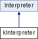

Command interpreter class used by the KDE AppRover GUI. More...
#include <kInterpreter.h>
Inheritance diagram for kInterpreter:

Public Member Functions | |
| virtual bool | Interpret (string command, bool pleaseWait=false) |
Private Attributes | |
| WaitDialog * | mWaitDialog |
| Dialog used to prompt the user to wait for execution to finish. | |
Detailed Description
Command interpreter class used by the KDE AppRover GUI.
Member Function Documentation
| bool kInterpreter::Interpret | ( | string | command, | |
| bool | pleaseWait = false | |||
| ) | [virtual] |
- Parameters:
-
command - the instruction to execute pleaseWait - if true, indicates that the user should be prompted to wair for execution to finish
- Returns:
- false if the instruction fails
Executes the specified instruction from the present working directory.
- Todo:
- If command starts with "@", make it execute silently
Reimplemented from Interpreter.
References WaitDialog::hide(), mWaitDialog, and WaitDialog::show().
The documentation for this class was generated from the following files:
- kInterpreter.h
- kInterpreter.cpp
Generated on Wed Jan 11 2012 21:20:41 for AppRover by
 1.7.1
1.7.1